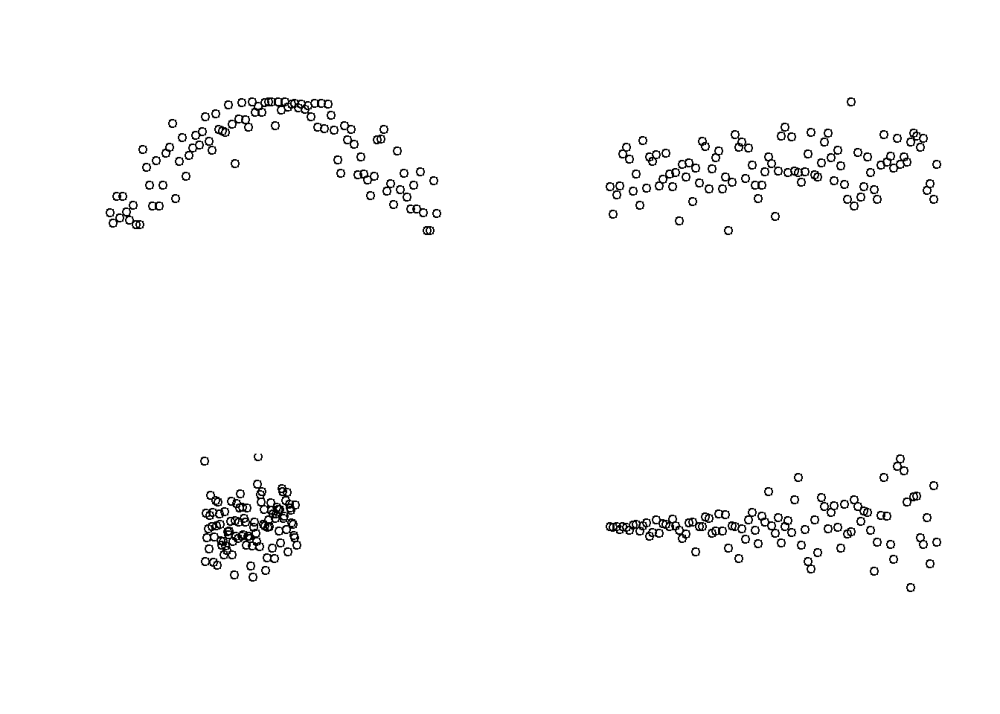
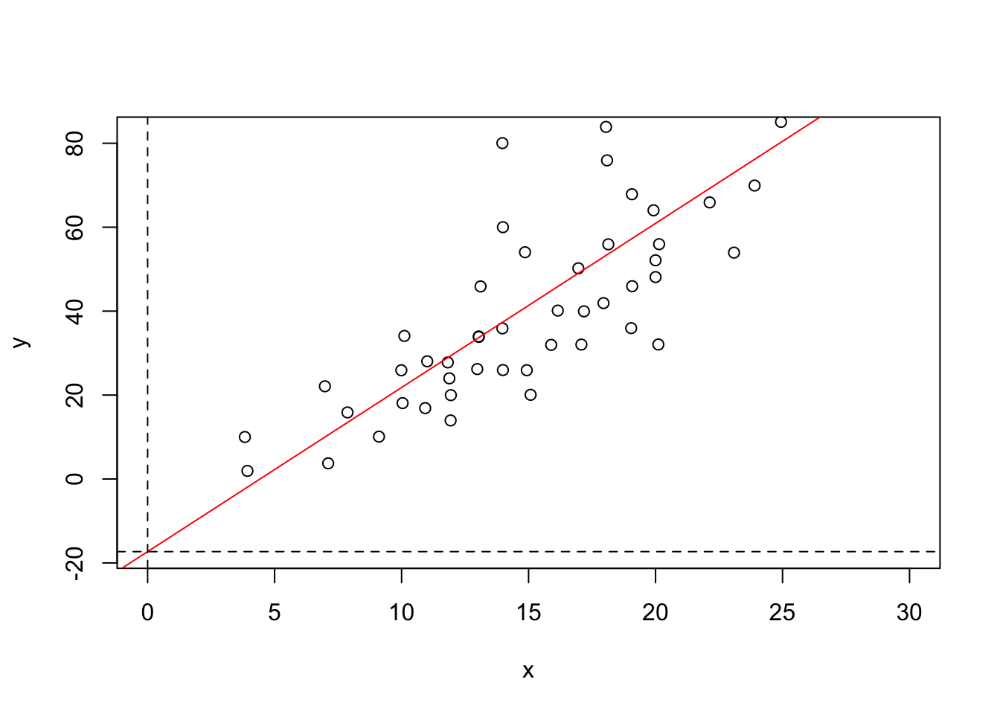
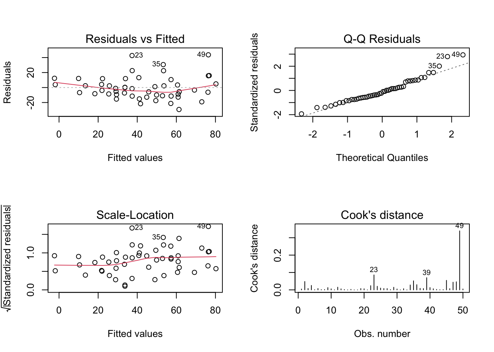
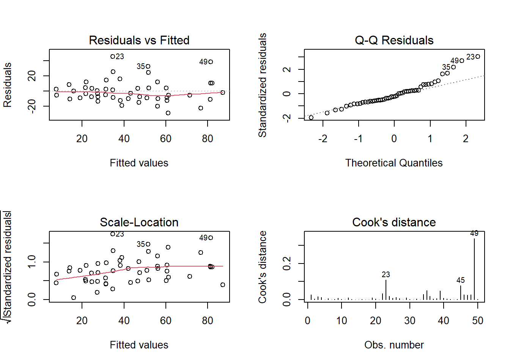
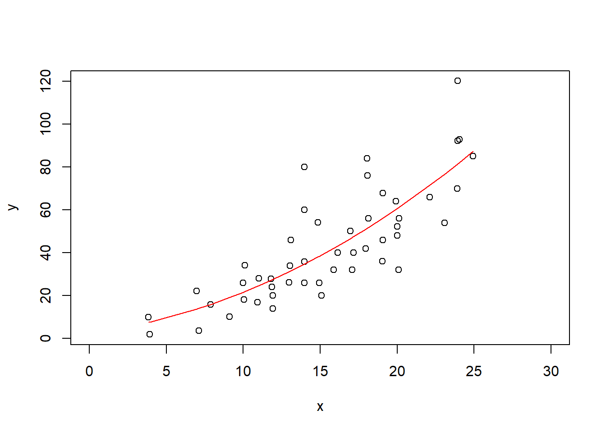

Kód
- 1
- Nejprve je nutné identifikovat pořadí,
- 2
- dále spočítat kvadrát vzdáleností,
- 3
- a po dosazení počtu měření \(n\) dosadit do rovnice.
Korelace je vztah mezi dvěma náhodnými veličinami. Zkoumá, zda se jedna ze zkoumaných veličin mění, pokud se zároveň mění i druhá.Korelace nezkoumá příčinnost, nelze tedy jednoznačně určit závislou a nezávislou proměnnou.
Míru korelace dvou veličin posuzujeme korelačním koeficientem. V případe normality u obou veličin lze použít Paersonův korelační koeficient,
\[ r_{xy} = \dfrac{\sum(x_i - \bar{x})(y_i - \bar{y})}{\sqrt{\sum(x_i - \bar{x})^2}\sqrt{\sum(y_i - \bar{y})^2}} \] přičemž platí \(r_{xy}\in\langle-1;1\rangle\). Alternativně můžeme použít neparametrický výpočet Spearmana, založený na diferencích pořadí pozorovaných hodnot, které definujeme jako \(d_i = x_{ri} - y_{ri}\)
\[ \rho = r_s = 1 - \dfrac{6\sum_{i=1}^{n}d_i^2}{n(n^2-1)} \tag{6.1}\]
x a y spočítá korelační Spearmanův koeficient.sp_k(_, _)
cor(_, _, method = "Spearman")
Narozdíl od korelace, v regresní analýze sledujeme příčinnou závislost. Identifikujeme nezávislou proměnnou a závislou proměnnou. Míru závislosti posuzujeme pomocí lineárního regresního modelu. Cílem regrese je proložit naměřenými body přímku, která nejlépe vystihuje vztah mezi proměnnými.
\[ y = \beta_0 + \beta_1x \] kde \(y\) je závislá proměnná, \(x\) je nezávislá proměnná, \(\beta_0\) je počátek (intercept) a \(\beta_1\) je sklon přímky.
Lineární model regresního typu definujeme v R pomocí funkce lm(), které na první pozici dosazujeme výraz ve formátu rovnice formula, např. lm(y ~ x). Model vyhodnocujeme funkcí summary a mezi sebou porovnáváme pomocí kritérií zohledňující vysvětlenou variabilitu/věrohodnost modelu a jeho komplexnost, např. Akaikeho informační kritérium.
\[ \text{AIC} = 2k - 2\ln(\hat{L}) \] kde \(k\) je počet volných parametrů modelu a \(\hat{L}\) je věrohodnostní funkce modelu.
dfr <- data.frame(
x <- c(3.93, 3.83, 7.11, 6.98, 7.87, 9.11, 10.04, 9.99, 10.11, 10.93, 11.01, 11.93,
11.94, 11.88, 11.82, 12.98, 13.04, 13.04, 13.11, 13.99, 13.97, 13.99, 13.97,
15.08, 14.93, 14.86, 15.89, 16.15, 17.08, 17.18, 16.96, 17.95, 18.14, 18.09,
18.05, 19.04, 19.08, 19.07, 20.11, 20, 20, 20.14, 19.92, 22.13, 23.09, 23.9,
23.95, 24.06, 23.95, 24.94
),
y <- c(1.93, 10.01, 3.73, 22.09, 15.86, 10.09, 18.09, 25.91, 34.09, 16.89, 28.04,
13.95, 19.98, 23.98, 27.78, 26.19, 33.85, 33.96, 45.88, 25.96, 35.89, 60,
80.03, 20.06, 25.92, 54.03, 31.96, 40.12, 32.03, 39.95, 50.2, 41.91, 55.92,
75.92, 83.89, 35.94, 45.94, 67.85, 32.05, 48.11, 52.11, 55.95, 64.02, 65.9,
53.94, 69.92, 92.1, 92.78, 120.03, 85.09)
)md1md1 <- lm(y ~ x, data = dfr)md1 je komplexní, můžeme vybírat jednotlivé proměnné k dalším účelům, například pro tvorbu grafů.str(md1, 1)List of 12
$ coefficients : Named num [1:2] -17.31 3.91
..- attr(*, "names")= chr [1:2] "(Intercept)" "x"
$ residuals : Named num [1:50] 3.86 12.33 -6.78 12.09 2.38 ...
..- attr(*, "names")= chr [1:50] "1" "2" "3" "4" ...
$ effects : Named num [1:50] -303.748 145.347 -8.977 9.859 0.371 ...
..- attr(*, "names")= chr [1:50] "(Intercept)" "x" "" "" ...
$ rank : int 2
$ fitted.values: Named num [1:50] -1.93 -2.32 10.51 10 13.48 ...
..- attr(*, "names")= chr [1:50] "1" "2" "3" "4" ...
$ assign : int [1:2] 0 1
$ qr :List of 5
..- attr(*, "class")= chr "qr"
$ df.residual : int 48
$ xlevels : Named list()
$ call : language lm(formula = y ~ x, data = dfr)
$ terms :Classes 'terms', 'formula' language y ~ x
.. ..- attr(*, "variables")= language list(y, x)
.. ..- attr(*, "factors")= int [1:2, 1] 0 1
.. .. ..- attr(*, "dimnames")=List of 2
.. ..- attr(*, "term.labels")= chr "x"
.. ..- attr(*, "order")= int 1
.. ..- attr(*, "intercept")= int 1
.. ..- attr(*, "response")= int 1
.. ..- attr(*, ".Environment")=<environment: R_GlobalEnv>
.. ..- attr(*, "predvars")= language list(y, x)
.. ..- attr(*, "dataClasses")= Named chr [1:2] "numeric" "numeric"
.. .. ..- attr(*, "names")= chr [1:2] "y" "x"
$ model :'data.frame': 50 obs. of 2 variables:
..- attr(*, "terms")=Classes 'terms', 'formula' language y ~ x
.. .. ..- attr(*, "variables")= language list(y, x)
.. .. ..- attr(*, "factors")= int [1:2, 1] 0 1
.. .. .. ..- attr(*, "dimnames")=List of 2
.. .. ..- attr(*, "term.labels")= chr "x"
.. .. ..- attr(*, "order")= int 1
.. .. ..- attr(*, "intercept")= int 1
.. .. ..- attr(*, "response")= int 1
.. .. ..- attr(*, ".Environment")=<environment: R_GlobalEnv>
.. .. ..- attr(*, "predvars")= language list(y, x)
.. .. ..- attr(*, "dataClasses")= Named chr [1:2] "numeric" "numeric"
.. .. .. ..- attr(*, "names")= chr [1:2] "y" "x"
- attr(*, "class")= chr "lm"with(dfr, plot(x, y, xlim = c(0, 30), ylim = c(md1$coefficients[1], max(md1$fitted.values) + 2)))
abline(md1$coefficients, col = "red")
abline(v = 0, lty = "dashed")
abline(h = md1$coefficients[1], lty = "dashed")
summarysummary(md1)
Call:
lm(formula = y ~ x, data = dfr)
Residuals:
Min 1Q Median 3Q Max
-29.306 -9.813 -2.403 9.132 43.654
Coefficients:
Estimate Std. Error t value Pr(>|t|)
(Intercept) -17.3061 6.7578 -2.561 0.0136 *
x 3.9116 0.4152 9.422 1.71e-12 ***
---
Signif. codes: 0 '***' 0.001 '**' 0.01 '*' 0.05 '.' 0.1 ' ' 1
Residual standard error: 15.43 on 48 degrees of freedom
Multiple R-squared: 0.6491, Adjusted R-squared: 0.6417
F-statistic: 88.77 on 1 and 48 DF, p-value: 1.715e-12Souhrn obsahuje původní zadání v podobě rovnice, dále identifikované koeficienty modelu, významnost závislosti indikuje přítomnost jedné nebo více * u vysvětlující proměnné; dále lze vyčíst podíl vysvětlené variabiltiy Adjusted R-squared: 0.6417.
par(mfrow = c(2, 2))
plot(md1, 1:4)
R dále poskytuje grafické nástroje k posouzení vhodnosti zvoleného modelu. Zde nás budou zajímat zejména residua modelu. Dle prvního grafu by mohl model se závislostí na polynomu být lepší volbou.
Pokusme se sestavit alternativní model s kvadratickou vysvětlující proměnnou.
md2 <- lm(y ~ poly(x, 2))
summary(md2)
Call:
lm(formula = y ~ poly(x, 2))
Residuals:
Min 1Q Median 3Q Max
-29.070 -9.042 -3.256 4.273 45.347
Coefficients:
Estimate Std. Error t value Pr(>|t|)
(Intercept) 42.956 2.152 19.958 < 2e-16 ***
poly(x, 2)1 145.347 15.219 9.550 1.38e-12 ***
poly(x, 2)2 23.158 15.219 1.522 0.135
---
Signif. codes: 0 '***' 0.001 '**' 0.01 '*' 0.05 '.' 0.1 ' ' 1
Residual standard error: 15.22 on 47 degrees of freedom
Multiple R-squared: 0.6655, Adjusted R-squared: 0.6513
F-statistic: 46.76 on 2 and 47 DF, p-value: 6.644e-12par(mfrow = c(2, 2))
plot(md2, 1:4)
with(dfr, plot(x, y, xlim = c(0, 30)))
pred <- predict(md2)
ix <- sort(dfr$x, index.return=T)$ix
lines(x[ix], pred[ix], col = 'red')
Srovnejme modely vzájemně
AIC(md1, md2) df AIC
md1 3 419.4615
md2 4 419.0572